정보통신산업기사 (2002-05-26 기출문제)
1과목: 디지털전자회로
1. 다음 중 직류전원회로의 구성 순서로 옳은 것은?
- 정류회로 → 변압회로 → 평활회로 → 정전압회로
- 변압회로 → 정류회로 → 평활회로 → 정전압회로
- 변압회로 → 평활회로 → 정류회로 → 정전압회로
- 변압회로 → 정류회로 → 정전압회로 → 평활회로
(정답률: 알수없음)

2. 다음은 리플 카운터(ripple counter)이다. 초기 상태 A=0, B=0, C=0 이었다면 클럭 펄스가 12개 인가된 후의 상태는?
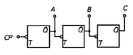
- A=0, B=0, C=1
- A=0, B=1, C=1
- A=1, B=1, C=0
- A=1, B=0, C=0
(정답률: 알수없음)
3. 그림(a)의 회로에 그림(b)와 같은 파형전압을 인가하면 출력 전압파형은?
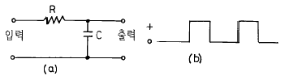
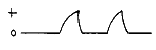
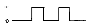
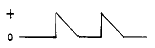
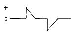
(정답률: 알수없음)
4. 그림과 같은 에미터 저항을 가진 CE 증폭기에서 에미터 저항 RE 의 가장 중요한 역할은 무엇인가?
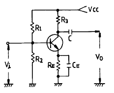
- S(안정계수)를 감소시켜 동작점이 안정된다.
- 주파수 대역을 증가시킨다.
- 바이어스 전압을 감소 시킨다.
- 증폭회로의 출력을 증가시킨다.
(정답률: 알수없음)
5. 다음 그림의 회로는 무슨 회로인가?
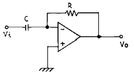
- 미분기
- 적분기
- 가산기
- 증폭기
(정답률: 알수없음)
6. 논리식 A(A+B+C)를 간단히 하면 어느 값과 같은가?
- 1
- 0
- B+C
- A
(정답률: 알수없음)
7. 실리콘 제어 정류소자(SCR)의 전류 - 전압 특성곡선은 어느 것인가?
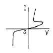
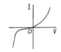
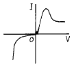
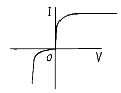
(정답률: 알수없음)
8. 반가산기(Half-adder)의 구성 요소로 맞는 것은?
- JK 플립플롭
- 두개의 AND 게이트
- EOR과 AND 게이트
- 1개의 반동시 회로와 OR 게이트
(정답률: 알수없음)
9. 진폭 변조파의 전압 e(t)가 다음과 같이 표시되었을 때 변조도는 몇[%]인가 ?
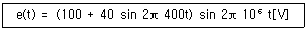
- 80
- 70
- 40
- 20
(정답률: 알수없음)
10. 연속적으로 반복되는 펄스 파형에서 펄스 1개의 "1" 구간이 1[msec]이고, "0" 구간이 1[msec]이다. 이 파형의 주파수는 얼마인가?
- 0.5[KHz]
- 1[KHz]
- 2[KHz]
- 1[MHz]
(정답률: 알수없음)
11. 다음 그림은 어떤 플립 플롭(Flip-Flop)회로인가?
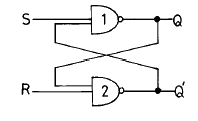
- Basic F-F
- J-K F-F
- D F-F
- T F-F
(정답률: 알수없음)
12. 다음 카아르노프도의 간략식은?
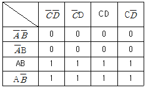
- Y = A
- Y = B
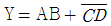
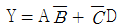
(정답률: 알수없음)
13. 다음 진리표의 Karnaugh map을 작성한 것중 옳은 것은?
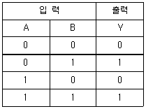
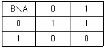
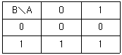
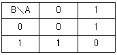
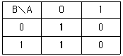
(정답률: 알수없음)
14. 에미터 접지일 때 전류증폭율이 각각 hFE1, hFE2인 두개의 트랜지스터 Q1과 Q2를 그림과 같이 접속하였을 때의 콜렉터 전류 Ic의 크기는?
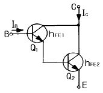
- hFE1 · hFE2 · IB
- (hFE1 · hFE2) · IB
- hFE2(hFE1 + 1) · IB
- hFE1 · IB + hFE2(hFE1 + 1) · IB
(정답률: 알수없음)
15. 트랜지스터 증폭회로에서 저항 R1의 역할은?
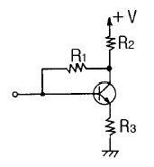
- 입력 임피던스 조절
- 바이어스 안정화
- 부궤환 작용
- 부하저항
(정답률: 알수없음)
16. 다음 궤환증폭기의 특성에 관한 설명중 틀리는 것은?
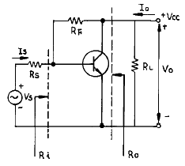
- 궤환으로 입력 임피이던스 Ri는 감소한다.
- 궤환으로 출력 임피이던스 Ro는 감소한다.
- 궤환으로 전류이득 Io/Is는 감소한다.
- RF가 작을수록 출력전압 Vo는 커진다.
(정답률: 알수없음)
17. 그림과 같은 회로의 출력 논리식이 아닌 것은?
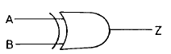
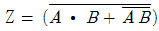
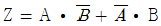
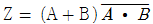
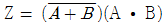
(정답률: 알수없음)
18. Schmitt 트리거회로의 응용 예로 틀린 것은?
- 전압비교회로
- 방형파회로
- 쌍안정회로
- 증폭회로
(정답률: 알수없음)
19. 주파수 변조방식이 진폭변조방식보다 좋은 점이 아닌 것은?
- S/N비가 개선된다.
- 에코우의 영향이 적다.
- 초단파대의 통신에 적합하다.
- 점유 주파수 대역폭이 좁아 송신효율이 좋다.
(정답률: 알수없음)
20. 다음의 발진회로에서 L = 10[mH], C1 = C2 = 800[pF]일 때 공진주파수는 약 몇 [kHz]인가?
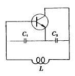
- 10[kHz]
- 20[kHz]
- 40[kHz]
- 80[kHz]
(정답률: 알수없음)
2과목: 정보통신기기
21. 무선송신기의 구성에서 반송주파수를 생성시키는 것은?
- 발진부
- 주파수증폭부
- 변조부
- 전력증폭부
(정답률: 알수없음)
22. 다음 중 주파수(스팩트럼)의 이용효율이 가장 좋은 변조방식은?
- 16 QAM(16상직교진폭변조)
- FSK(주파수편이변조)
- ASK(진폭편이변조)
- 4PSK(4치위상변조)
(정답률: 알수없음)
23. 지구관측위성의 회전궤도이며, 지구의 여러곳의 상태를 관찰할 수 있는 궤도의 이름은?
- 극 궤도
- 적도면 궤도
- 타원 궤도
- 태양동기 궤도
(정답률: 알수없음)
24. 다음 중 통신위성의 주전력 공급원은?
- Battery
- Fuel cells
- Solar cells
- Thermoelectric generator
(정답률: 알수없음)
25. 별도의 구내교환 설비를 설치하지 않고 전화국의 전화교환 설비를 이용하여 구내교환 기능 및 다양한 서비스를 제공할 수 있는 것은?
- VMS
- 집단전화
- 센트렉스(centrex)
- 일반교환회선서비스
(정답률: 알수없음)
26. 문자나 도형 등을 입력하기 위하여 평면 모양으로 구성된 입력면내에 지시펜 등으로 지시하므로써 그 위치정보를 입력할 수 있는 단말장치는?
- OCR
- OMR
- COM
- Tablet
(정답률: 알수없음)
27. 다음의 전기통신의 예 중 그 성격이 다른 것은?
- 라디오
- 텔레비젼
- 전화
- 디지털 TV
(정답률: 알수없음)
28. 텔리텍스 단말기의 설명중 옳지 않은 것은?
- 문서의 편집, 수정, 보관 및 송수신이 가능한 WP의 기능
- 문자정보와 동화상정보를 송수신하는 기능
- 고속 전송기능을 수행하고 2400bps의 전이중 전송이 가능함.
- 자료축적기능이 있어 부재중 메시지 전달이 가능함.
(정답률: 알수없음)
29. 5회선 이내의 국선이나 구내 교환기의 내선을 여러대의 내선전화로 사용할 수 있는 다기능 전화기는?
- 키폰 전화기
- 내부통화 장치
- 푸쉬버튼 전화장치
- 구내 교환기능 전화장치
(정답률: 알수없음)
30. 변복조기 공동이용기와 선로공동이용기에 대한 설명 중 옳은 것은?
- 폴/셀렉트 프로토콜을 이용한다.
- 네트워크구성이 복잡하고 비용이 다소 많이 든다.
- 다중화기의 동작은 DTE와 무관하게 이루어지나 공동이용 네트워크는 호스트컴퓨터가 폴링을 해서 통신회선의 공동이용을 제어한다.
- 변복조기 공동이용기는 타이밍소스가 있고 선로공동이용기는 내부에 타이밍소스가 없다.
(정답률: 알수없음)
31. 팩시밀리 통신방식에서 100초의 전송시간으로 보내고 있었던 원고를 200초의 전송시간으로 보내는 경우 주사선 밀도는 어떻게 되는가? (단, 전송로의 주파수 대역은 일정하다.)
- 2배
- √2배
- 3배
- 4배
(정답률: 알수없음)
32. 텔리텍스 단말기의 통신부 구성요소가 아닌 것은?
- 로컬 메모리
- 수신 메모리
- 송신 메모리
- 통신제어
(정답률: 알수없음)
33. 다음 중 전자교환 방식에 대한 설명으로서 옳지 않는 것은?
- 아날로그 방식과 디지털 방식이 있고, 디지털 방식은 회선교환 방식과 패킷 교환방식이 있다.
- 제어방식은 전자부품을 사용한 포선논리 방식을 사용한다.
- 회선교환 방식은 공간 분할 방식과 시 분할 방식이 있다.
- 시분할 교환방식은 동기식과 비동기식이 있다.
(정답률: 알수없음)
34. 디지털 신호를 아날로그 전송회선에 전송 가능하도록 변환시켜 주는 변환기는?
- DSU(Digital Service Unit)
- DCE(Data Circuit Terminal Equipment)
- CSU(Channel Service Unit)
- MODEM
(정답률: 알수없음)
35. 다음 중 수신기의 기본회로가 아닌 것은?
- 고주파 증폭부
- 중간주파 증폭부
- 복조부
- 완충 증폭부
(정답률: 알수없음)
36. 단말기의 데이터를 전송신호로 변환하는 목적으로 가장 타당한 것은?
- 데이터를 공간파로 전송하기 위함
- 유선의 경제적인 운용이점을 활용하기 위함
- 다양하게 신호를 변환하여 응용하기 위함
- 데이터를 전송로의 특성에 알맞게 하기 위함
(정답률: 알수없음)
37. 어떤 특정 상호간만을 연결한 TV 통신시스템에 의하여 호텔, 병원, 학교 같은 특정대상에게 특정한 프로그램을 제공하는 시스템은?
- CATV
- CCTV
- VRS
- HDTV
(정답률: 알수없음)
38. 데이터 단말장치의 기본 기능이 아닌 것은?
- 데이터 입력
- 데이터 송신
- 데이터 처리
- 데이터 출력
(정답률: 알수없음)
39. 다음 중 포트 공동이용기의 설명이 잘못된 것은?
- 폴/셀렉트 프로토콜을 이용한다.
- 컴퓨터와 터미널을 같은 장소에 설치해야한다.
- 변복조기 공동이용기와 선로 공동이용기의 대체장비 혹은 보충장비로 이용한다.
- 호스트컴퓨터와 변복조기 사이에 설치되어 여러 대의 터미널이 하나의 공동포트를 이용한다.
(정답률: 알수없음)
40. 통신회선을 직접 보유하거나 공중통신사업자의 회선을 임차 또는 이용하여 단순한 전송기능 이상의 정보의 축적, 가공, 변환처리 등을 행하는 정보통신 서비스는?
- LAN
- VAN
- CATV
- HDTV
(정답률: 알수없음)
3과목: 정보전송개론
41. HDLC(High Level Data Link Control)의 프레임 구성 순서를 옳게 나타낸 것은?
- 플래그-제어부-어드레스부-데이터부- 프레임검사시퀀스-플래그
- 플래그-어드레스부-데이터부-프레임검사시퀀스- 제어부-플래그
- 플래그-어드레스부-제어부-데이터부- 프레임검사시퀀스-플래그
- 플래그-제어부-데이터부-프레임검사시퀀스- 어드레스부-플래그
(정답률: 알수없음)
42. 디지탈 광통신 방식에서 레이저 광선의 변조를 위해 현재 주로 사용되는 변조 방법은?
- IM(Intensity Modulation)
- FSK(frequency shift keying)
- WDM(wavelengh division multiplexing)
- FM(Frequency Modulation)
(정답률: 알수없음)
43. 다음 전송선로중 대역폭이 가장 넓은 전송매체는?
- twist pair cable
- base band coaxial cable
- CATV coaxial cable
- fiber optics cable
(정답률: 알수없음)
44. 길쌈부호기의 부호화율을 1/3, 발생다항식을 g1=(100), g2=(11), g3=(101)이라 할 때 입력을 1011을 인가하였을 때의 출력은? (단, 초기조건은 모두 0 이다.)
- 111010100101
- 101000010001
- 110010000111
- 111001011000
(정답률: 알수없음)
45. 다음은 PCM통신시스템의 블럭다이어 그램이다. 각 블록에 들어갈 기능이 옳게 짝지어진 것은?
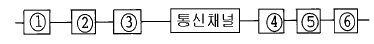
- ① 표본화, ② 부호화, ③ 양자화, ④ 복호화, ⑤ 양자화, ⑥ 필터링
- ① 표본화, ② 양자화, ③ 부호화, ④ 양자화, ⑤ 필터링, ⑥ 복호화
- ① 표본화, ② 양자화, ③ 부호화, ④ 필터링, ⑤ 양자화, ⑥ 복호화
- ① 표본화, ② 양자화, ③ 부호화, ④ 양자화, ⑤ 복호화, ⑥ 필터링
(정답률: 알수없음)
46. 동축케이블에 있어서 사용주파수가 높아지면 그 값 또는 작용이 감소되는 것은?
- 누화현상
- 표피작용
- 근접작용
- 와류손실
(정답률: 알수없음)
47. 다음 아날로그 변조방식중 포락선 검파를 이용하여 복조가 가능한 변조방식은 어느것인가?
- AM(Amplitude Modulation)
- DSB(Double Side Band)
- SSB(Single Side Band)
- FM(Frequency Modulation)
(정답률: 알수없음)
48. 자동오자 정정부호에서 오자의 검출방법은?
- 통신속도를 측정
- 전류의 부호검출
- 부호왜곡을 체크(CHECK)
- 패리티 체크(PARITY CHECK)
(정답률: 알수없음)
49. 다수의 사용자가 동일한 시간에 동시에 할당된 주파수 스펙트럼(spectrum)을 사용하도록 하는 다중화 기술은?
- FDM
- TDM
- CDM
- STDM
(정답률: 알수없음)
50. Ferranti 현상이란?
- 수단 전압의 절대치는 송단 전압의 절대치 보다 크다.
- 이종(異種)금속간에 열기전력을 발생하는 현상
- 수단 전류는 송단 전류의 평방근에 비례한다.
- 환상 소레노이드 중앙에 발생하는 역기전력에 관한 현상
(정답률: 알수없음)
51. 첫번째와 두번째 전송로의 단위 펄스간격이 500×10-6초, 1000×10-6초이고, 단위펄스가 나타내는 상태의 수가 각각 4, 8이라고 하면 전체 전송로의 용량은 몇[bps]인가?
- 1000
- 3000
- 5000
- 7000
(정답률: 알수없음)
52. 1200 보오(baud)의 전송속도를 갖는 전송선로에서 신호비트가 트리비트(tribit)이면 전송속도는 몇 bps인가?
- 1200
- 2400
- 3600
- 4800
(정답률: 알수없음)
53. ARQ 방식에 대한 설명으로 가장 적합한 것은?
- 에러를 정정하는 방식
- 부호를 전송하는 방식
- 에러를 검출하는 방식
- 에러를 검출하여 재전송을 요구하는 방식
(정답률: 알수없음)
54. 일반적인 통신선로에서 선로의 길이에 관계되지 않는 것은?
- 상호 임피던스
- 특성임피던스
- 절연저항
- 정전용량
(정답률: 알수없음)
55. 다음중 주파수가 가장 높은 전파는?
- 밀리파
- 서브밀리파
- 마이크로파
- 극초단파
(정답률: 알수없음)
56. 기본형 데이타 전송제어 순서에서 사용되어지는 제어 캐렉터가 아닌 것은?
- ETB
- FCS
- SOH
- STX
(정답률: 알수없음)
57. 다음 그림중 복류 RZ 방식은 어느 것 인가?
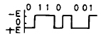
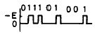
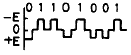
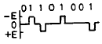
(정답률: 알수없음)
58. 반송파 전송에 대해 알맞는 설명은?
- 임의의 주파수 대역을 가진 전송신호를 그대로 전류의 형태로 전송하는 형식이다.
- 신호를 대역통과시키는 전송방식이다.
- 신호를 증폭하는 전송방식이다.
- 송신기에 의해서 발진한 반송파로 신호를 변조시켜 전송로로 보내는 전송방식이다.
(정답률: 알수없음)
59. ITU-T의 권고안 중에서 변복조기에 대한 규정은?
- X-시리즈
- V-시리즈
- I-시리즈
- Z-시리즈
(정답률: 알수없음)
60. CEPT 방식의 디지털 하이어라키를 설명한 것이다. 틀린 것은?
- 1차군의 전송속도는 2,048[Mbps]이다.
- 2차군의 전송속도는 8,448[Mbps]이다.
- 3차군의 전송속도는 44,736[Mbps]이다.
- 4차군의 전송속도는 139,264[Mbps]이다.
(정답률: 알수없음)
4과목: 전자계산기일반 및 정보설비기준
61. 정보통신공사업의 등록기준에 해당되지 않는 것은?
- 기술능력
- 자본금
- 사무실(작업실)
- 공사용 기기
(정답률: 알수없음)
62. 정보의 처리, 전송에 필요한 정보통신망(전산망)기기 상호간의 통신을 확보할 수 있는 논리적 계층구조의 집합체를 무엇이라고 하는가?
- 통신규약
- 통신구조
- 접속구조
- 통신망구조
(정답률: 알수없음)
63. 마지막으로 입력한 것이 제일먼저 출력된다면 이 S/W의 자료구조는?
- FIFO
- LIFO
- LILO
- FILO
(정답률: 알수없음)
64. 데이터의 길이가 2byte이면 몇 니블(nibble)에 해당되는가?
- 2
- 4
- 6
- 8
(정답률: 알수없음)
65. 통신설비의 기술기준에서 정한 음성주파수의 대역폭은?
- 300[Hz] 미만
- 300~3400[Hz]
- 300~3400[kHz]
- 300~3400[MHz]
(정답률: 알수없음)
66. 정보통신부장관이 통신기자재 생산업자 또는 전기통신공사업자에 대하여 행하는 기술지도의 내용이 아닌 것은?
- 기술의 표준화
- 기술정보의 제공
- 국제기구와의 협력
- 새로운 기술의 운용
(정답률: 알수없음)
67. 통신망의 보급과 이용에 관련된 기기를 제조하거나, 수입하고자 할 때 형식승인권자는?
- 행정자치부장관
- 과학기술부장관
- 정보통신부장관
- 산업자원부장관
(정답률: 알수없음)
68. 다음 중에서 마이크로 프로세서의 특징이 아닌 것은?
- 구성이 간단하다.
- 신뢰성이 향상된다.
- 대부분 LSI로 구성되어있어 시스템의 크기가 작다.
- 시스템 설치 후 기능 변경이나 확장이 어렵다.
(정답률: 알수없음)
69. ASCII 코드에서 문자 표시는 몇 비트 (bit)로 구성되어 있는가?
- 5
- 6
- 7
- 8
(정답률: 알수없음)
70. 정보통신설비의 운용보수요원의 작업 중 예방운용 보전 작업이 아닌 것은?
- 고장접수 및 시험
- 회선의 감시 및 점검
- 각종 기기 점검
- 예비품의 점검 관리
(정답률: 알수없음)
71. 다음 중 단위 관계가 잘못된 것은?
- 절대레벨 - dBm
- 음압레벨 - dBSPL
- 음량정격 - phon
- 주파수 - Hz
(정답률: 알수없음)
72. 복수개의 입출력 단자를 가지며 입력단자중 한 단자에 신호(1 bit)가 가해질 때 출력단자에는 그에 대응된 신호(nbit)가 나온다. 이와 같은 회로를 무엇이라고 하는가?
- 디코더(decoder)
- 엔코더(encoder)
- 레지스터(register)
- 카운터(counter)
(정답률: 알수없음)
73. 다음 중 도형을 입력시키는 장치가 아닌 것은?
- digitizer
- light pen
- mark reader
- tablet
(정답률: 알수없음)
74. 운영체제(OS)의 목적과 관계가 먼 것은?
- 처리능력의 증대
- 응답시간의 단축
- 신뢰도의 향상
- 응용소프트웨어의 개발
(정답률: 알수없음)
75. 컴퓨터의 주메모리(main memory)장치에 널리 사용 되는 것은?
- 자기테이프
- 플로피 디스크
- 하드 디스크
- 반도체 IC 메모리
(정답률: 알수없음)
76. 다음 중 정보화시책의 기본원칙과 관계가 적은 것은?
- 특정사업자의 기술력 신장
- 민간투자의 확대와 공정경쟁촉진
- 정보통신기반에 대한 자유로운 접근과 활용
- 개인의 사생활 및 지적소유권의 보호와 각종 정보자료의 안전성 유지
(정답률: 알수없음)
77. 전기통신망에 접속되는 단말기기 및 그 부속 설비를 무엇이라 하는가?
- 전원설비
- 단말장치
- 정보통신설비
- 입.출력장치
(정답률: 알수없음)
78. 컴퓨터의 본체 구성에서 주요 기본장치가 아닌 것은?
- 제어장치
- 기억장치
- 연산장치
- 정보처리장치
(정답률: 알수없음)
79. 정보통신부장관의 권한사항으로 틀린 것은?
- 사업자간의 적정경쟁 보장
- 이용약관의 인가 및 변경
- 부가통신사업자의 허가
- 새로운 통신방식 채택
(정답률: 알수없음)
80. 기억장치의 내용을 보기 위하여 화면이나 프린터 등으로 뽑아보는 것을 무엇이라고 하는가?
- Debugging
- Dump
- Coding
- Loader
(정답률: 알수없음)
- 변압회로: 고전압을 저전압으로 변환하는 회로
- 정류회로: 교류 전원에서 직류 전원을 만드는 회로
- 평활회로: 정류된 직류 전원에서 나머지 노이즈를 제거하고 안정적인 전원을 만드는 회로
- 정전압회로: 안정적인 전압을 유지하기 위한 회로
따라서, 고전압을 저전압으로 변환한 후, 교류 전원에서 직류 전원을 만들고, 나머지 노이즈를 제거하여 안정적인 전원을 만들고, 마지막으로 안정적인 전압을 유지하기 위한 회로를 구성하는 것이 옳은 순서입니다.